整个春天，我都在强调春季养生，其中重要的一点就是要打开人体气的通道，这样才能祛除湿气、寒气、风气，从而让我们的血气运行起来，肝气得以疏发，阳气得以升发。
在春天，要打开人体气的通道，我们就需要与香味为伴。随着春天的逐步深入，到暮春这个月，我们所需要的香味要更加浓烈才行。
虽然已到春天的最后阶段，但是老天爷也在帮我们，它让百花都盛开了，空气中充溢着各种花朵的芳香。
我们自己也可以让房间里终日萦绕着茶香和花草茶的芳香，可以借此来氤氲我们的喉目，疏肝理气。每天的一日三餐，我们也要尽量选择带有浓烈香气的菜，比如应时上市的香椿。
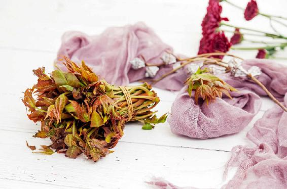
说起香椿，它的味道太浓烈了，喜欢的人是非常喜欢，不喜欢的人就完全接受不了。如果您了解了香椿，就会觉得它的香味真的是大有益处的。
香椿其实也是药，可以祛风、祛湿，很好地预防和调理风湿病。
1.糖尿病患者吃香椿很好
香椿还能调理糖尿病，患糖尿病的朋友，在香椿上市的时候可以经常地吃一些香椿。
有些朋友给我留言说：“为什么糖尿病患者可以吃香椿呢？糖尿病不是阴虚火旺造成的吗？”
其实，这是一个非常片面的认识。随着糖尿病的发展，患者多会脾肾双虚，还是阴阳两虚。因此，才可以在春天这个阳气升发的季节吃一些香椿，而到了秋冬季，又可以适当地滋阴。
调理糖尿病并不是一味地滋阴就可以，因为很多糖尿病患者朋友发展到后期，已经以阳虚为主了，这一点要特别注意。
2.补肾阳的药食不少，通肾阳的药食却不多
对于我们普通人来说，春天吃香椿是非常应时的。
在春天，我们要养的是身体的阳气，香椿就是升发阳气的，它是一种温性的食物，对我们的脾、胃、肾都有很好的温补作用。
第一，香椿是补脾阳的。春天的养生重点之一是补脾，我们吃完香椿后会觉得很舒服。
第二，香椿是暖胃的。有些脾胃虚寒、吃饭经常不消化的朋友，吃一点香椿会觉得胃舒服多了。
第三，香椿可以通肾阳，这一点非常宝贵。
请注意，这里用的是一个“通”字，而不是简单的“补”字，因为补肾阳的东西很多，但通肾阳的却不多。香椿作为通肾阳的食物，是非常宝贵的。
什么叫“通”？就是疏通，既可以补到肾的阳气，又可以温暖它，还可以疏通它。
想怀孕的女性朋友，我建议您在春天可以多吃一些香椿，因为香椿有通肾阳的作用，它可以促进人体内分泌的平衡，能助孕。如果一些女性朋友的输卵管不通，建议您多吃香椿来辅助调理。
3.树干笔直向上，人的腰背挺直向上，都是阳气足的表现
香椿是一种阳气非常足的植物，阳气很足、生长能力很强的植物对人体都是有补益作用的。
香椿的生长能力强到什么程度呢？只要给它一点阳光，它就会长得非常快。
我家院子里就种了两棵香椿树，我经常观察它们。刚种的时候，香椿树苗很幼小，第二年春天采香椿芽的时候，我发现朝着阳光的那棵已经蹿到了四五米高，如果想采香椿芽，还得搭梯子上去。到了第三年，它已经比两层楼还高了，而且它的枝干非常笔直。
香椿不仅枝干长得快，它的芽生长也是非常快的。
注意一点啊，香椿树的枝干是笔直向上的，这就是阳气足的象征。
如果您留心观察会发现，阳气比较足的老年人腰背是非常挺直的，而阳气虚的老年人则早早驼背了。所以要想人体的阳气比较充足，我们就要时刻注意挺胸抬头，让自己的脊背挺直。
4.人和树一样，多晒太阳才能长得好
现在，我家那棵向阳的香椿树，已经长到我们搭梯子也够不到树冠上的香椿芽了。虽然我们截过它一次，但我真的不太忍心总去锯树，所以还是让它自然生长了。
另外一棵香椿树就很不一样了，因为我们把它种在了一个背阴的地方，阳光不太充足，它长得就比较慢。我们适时地修枝，让它保持在一个成年人的高度，这正好保证了全家人年年能吃上新鲜香椿芽。
这两棵香椿树的高度说明了不管是人还是植物，都是非常需要阳光的。因此，如果想让小朋友个子长得高，那真的得多运动、多晒太阳。
到了春天，南方地区和北方地区香椿芽上市的时间差别很大，有的朋友可能提前两个月就能吃到新上市的香椿芽了。这没关系，什么时候上市什么时候购买就是了，总之是应地、应时的就好。
人工种植的香椿，它上市的时间会比较早，但天然生长的香椿上市时间就会晚一点。
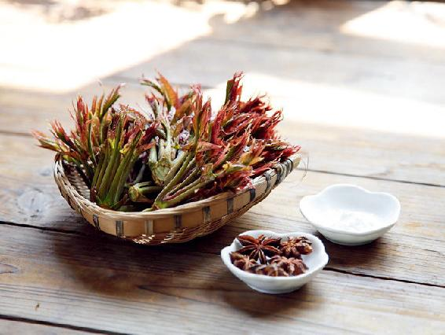
1.头茬香椿芽的吃法
头茬香椿芽是非常嫩的，吃的时候，都不用焯水，用盐直接腌一下，切碎了，拌点嫩豆腐，淋上一点香油，味道非常好。
2.二茬香椿芽的吃法
二茬香椿芽才用来炒鸡蛋，头茬的用来炒，真的是可惜了。另外，二茬香椿芽要是用来炒鸡蛋，或者拌凉菜的话，那就要焯水了。
3.香椿鱼、腊肉糯米香椿饭、香椿拌黄豆
我的读者也分享过几种他们家的吃法，我觉得非常好，也推荐给您。
第一，做鱼的时候可以放一点香椿，特别是做干烧鱼的时候，这样可以去掉鱼的腥味，味道也很好。
第二，做消寒糯米饭时，起锅的时候撒一点点香椿末，别有一番风味。我前面讲过，香椿是暖胃消食的，而消寒糯米饭是比较滋腻的，加一点点香椿来帮助消食，这个方法很妙。
第三，把香椿腌成咸菜，然后拌上黄豆吃。这个方法也不错，是可以让我们四季都能吃上香椿的好方法。
我再总结一下春天吃香椿的好处：第一，帮助身体升发阳气；第二，补脾阳；第三，暖胃；第四，通肾阳，可以促进内分泌，有助孕的作用。
想要怀孕的年轻朋友，无论男女都是可以在这个时节多吃一点香椿的。
曾经有这样一条轰动一时的新闻，一位75岁的老人突然出现发抖、发冷症状，同时上吐下泻，紧急送医后，诊断为食物中毒引发肝脏、肾脏等多器官衰竭。
由于之前这位老人家吃的饭菜里有一盘香椿炒鸡蛋，舆论就匆忙把香椿当成罪魁祸首，认为食用香椿导致亚硝酸盐过量。
其实，当时还没有做调查，到底是什么成分引起中毒？老人家有没有吃过其他不洁食物？是不是采错了椿树芽当成香椿食用？
香椿是发物，个别人吃香椿过敏是有可能的。但是“器官衰竭”这口锅，香椿还真背不了。
吃香椿，只要注意两点禁忌就可以了。
第一， 二茬以后的香椿硝酸盐含量会比较高，买回来放久了以后，容易产生亚硝酸盐，所以我建议二茬以后的香椿都不要生吃，最好用开水焯1分钟后再来做菜，这样可以去掉其中2/3以上的硝酸盐。如果做盐腌香椿或油泡香椿，做的时候腌制过又挤出了水分，就不需要再焯水了。
第二，有痨病或者皮肤病的朋友，第一次吃香椿的时候要谨慎。最好第一次吃的量少一点，看看身体有没有什么反应，没事的话，第二顿再加点量。
香椿虽然好，但它是发物，吃多了有可能会引起一些旧病复发。香椿是养阳气的，当人体阳气足的时候就会不由自主地把病往外赶，但这种赶的方式，有时候可能不是我们想要的。
当人体的排毒通道不太畅通的时候，病就会从皮肤上发出来。比如，有些朋友吃完香椿以后，皮肤上就会出现红疹子，这就是人体在往外驱赶病邪的表现。
我们也不用太害怕发物，发物通常都是养阳气的东西，只是它帮助我们身体增加阳气以后，产生的这种排病的方式让我们感到过于猛烈了。
总之，不管您是不是有口福享用春天的香椿，都请您一定记住，春天，我们要与香味为伴!
吃香椿可以补脾，可以暖胃，可以通肾阳，在春天我们可以多吃些应时的香椿。
有哪些朋友是可以一年四季常吃香椿的呢？
1.脾胃虚寒的人
脾胃虚寒的人，包括一些年轻的女性朋友和一些小孩子，一年四季常吃香椿可以调理脾胃。
2.糖尿病患者
糖尿病患者都是脾肾双虚的，一年四季常吃香椿是可以补脾又补肾的，对于降糖也很有帮助。
3.怀孕困难的女性
这类女性可以在日常饮食中多吃一些香椿来辅助调理。其实，吃香椿是不分男女的，香椿通肾阳，能够有效地改善人体的生殖系统功能。
读者评论：香椿炒鸡蛋特别好吃
二大爷_js：我在苏南地区，每年的香椿芽都会吃，炒鸡蛋、腌着吃、包饺子，很香很香。
KL快乐人生：去市场买来的香椿是头茬的还是二茬的，我不是很清楚，不过炒鸡蛋是特别好吃。
咩咩：我以前对香椿没有好感，知道香椿的好处后就喜欢上了香椿。
允斌解惑：香椿的香味对人也有益
郑士香：请问香椿的香味对人也有益吗？
允斌：是的。
春天可以吃香椿的时间有点短，过了时令以后就没有了，用什么办法来保存它呢？有三种方法。
速冻之前，最好把香椿用开水焯一下，因为二茬、三茬的香椿会产生硝酸盐，继而有可能会产生亚硝酸盐，所以在速冻之前，要把它放开水里焯1分钟，这样就可以去掉香椿大部分的硝酸盐和亚硝酸盐。焯的时间不要太长，否则就会损失营养。好了之后马上捞起来，再过一下凉水，等它完全凉了，再把它包成一小包一小包的，放到冰箱里速冻。
焯过水后再速冻的香椿，一是去掉了硝酸盐和亚硝酸盐；二是它的颜色也能保持青绿；三是它的口感会更好。
为什么要把香椿包成一小包一小包地速冻呢？因为速冻的食物都很忌讳拿出来反复解冻，包成一小包是一次拿出来可以完全吃掉的量，这样也比较安全。
速冻后的香椿再解冻，口感肯定没有新鲜的香椿那么好，所以就不用做凉菜了，怎么做才好吃呢？把它炸着吃。
把鸡蛋和面粉调成糊，再搁一点盐，撒一点花椒面，然后把香椿挂糊下锅去炸。炸香椿的味道真的是非常香的，小朋友一定会非常喜欢。
北方农村常用这种方法来长期保存香椿，但要注意盐腌的时间。
腌香椿其实跟平时腌咸菜和泡菜是一个原理。
我曾经讲过腌泡菜，有一个三到七天的禁忌期。腌制到第三天的时候，亚硝酸盐的含量会达到一个高峰，之后含量就逐渐地降低；七天以后，含量就很低了，到第二十天的时候几乎就没有了。
如果我们用盐来腌制香椿，要注意第三天到第七天，最好不要吃它，而是把它一直腌放到两个星期之后，甚至二十天以上，这时候再吃就比较安全了。
在春天用盐腌制香椿，主要是为了在夏、秋、冬三个季节可以吃到。还有一点，腌制香椿前，先把香椿焯一下水。
另外，腌制时间到了后，把香椿拿出来食用，最好加一点姜、蒜，可以帮助去掉一些亚硝酸盐。
经过以上三重保护，我们就可以非常放心地吃香椿了。
用这个方法做出来的香椿，食用过的朋友都觉得真是太香了，并且能很好地保存香椿的营养和风味。
有些朋友可能吃过我国云南地区的油鸡枞（zōng），我们的油泡香椿在味道上跟它相比，可以说不分伯仲。
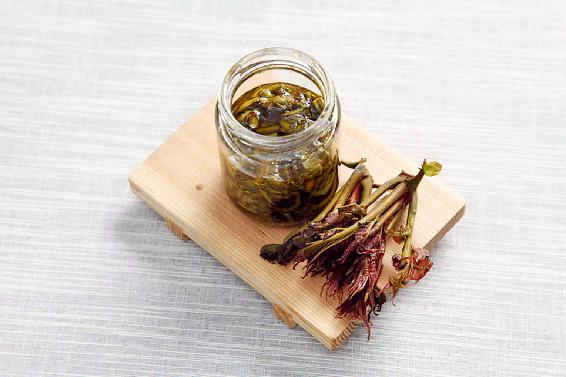
油泡香椿
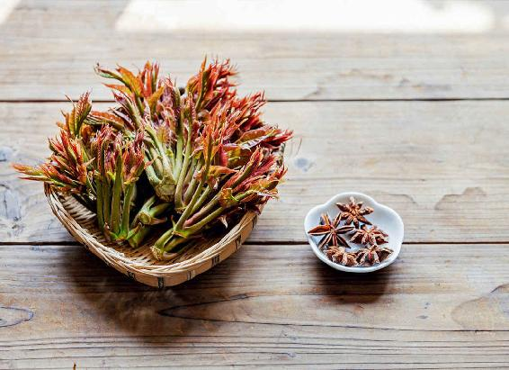
原料：新鲜香椿、大料（八角茴香）、油、盐。
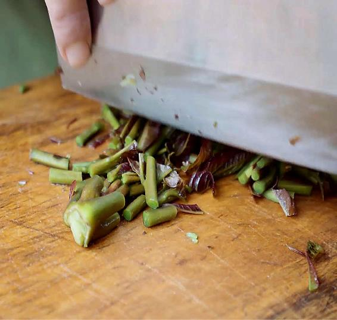
做法：
1.把香椿切成1厘米左右的小段，用盐腌两天。（注：如果是老的香椿，最好焯水1分钟后，再用盐腌制。）
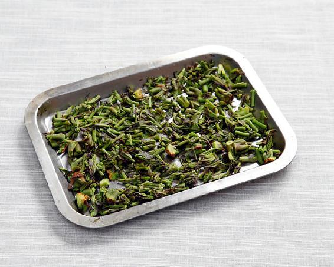
2.把香椿取出来，挤干水分，放到太阳底下去晒，晒到七八成干，蔫了以后就可以做油泡香椿了。
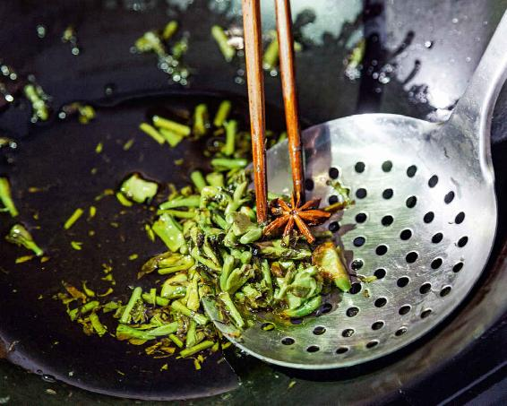
3.在正式做油泡香椿之前，先准备几个大料。把锅烧热，多放一点油，把大料放进去，用小火慢慢地炸出香味。等到很香了以后，把之前弄好的香椿段放到油锅里，用小火慢慢炸。炸到香椿段有一点脆了，闻到满屋都弥漫着香椿的香味，就可以起锅了。
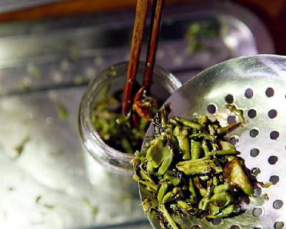
4.起锅以后把它稍微晾一下，把锅里的大料、香椿和油一起倒进瓶子里。瓶子最好是玻璃制的广口瓶，而且要很干净，没有沾水的。装好后，把瓶子放冰箱里保存起来。想吃的时候，直接用干净的勺子挖一点出来就可以了。
因为油泡香椿里有大料（八角茴香），可以防止亚硝酸盐的产生，而且药性还能渗透到油里；既有大料的药性，又有香椿的药性。
油泡香椿里的油可以用来当调料，拌凉菜也好，拌面条也好，都是非常香的，吃起来很容易被吸收，效果也比较好。
如果家里谁常年胃口不太好，或者小朋友不爱吃饭，甚至您怀疑小朋友肚子里是不是有虫，都可以先吃一点油泡香椿来调理，没准就好了。
如果我们嗓子眼儿有一点小痰，老爱咳几声来清嗓子，也可以吃一些油泡香椿来调理。
春天吃香椿就相当于补阳光。把美味的香椿保存起来，就等于留住了春天的阳光。
读者评论：来年吃香椿，味道依然香浓
相逢_e：第一次吃香椿时味道感觉有点怪，之后越来越喜欢。每年还冷冻些香椿，来年吃味道依然香浓。
娄桓毓：今年第一瓶油泡香椿吃完了。每天早餐当小菜吃，特别香。
云：今年做了人生第一次香椿菜（油泡），好吃，感谢老师的分享！
夷美：我去年做了一瓶油泡香椿，吃了一年真是美味，不但好吃还调理了身体，真是一举两得。
允斌解惑：香椿有通阳化气的作用
张亿歌：请教老师，我用你教我们做的藤椒油做油泡香椿可以吗？
允斌：可以的。
安心若水：油泡香椿去年就做了好多，真是香。请教老师，香椿有通阳化气的作用吗？
允斌：有的。
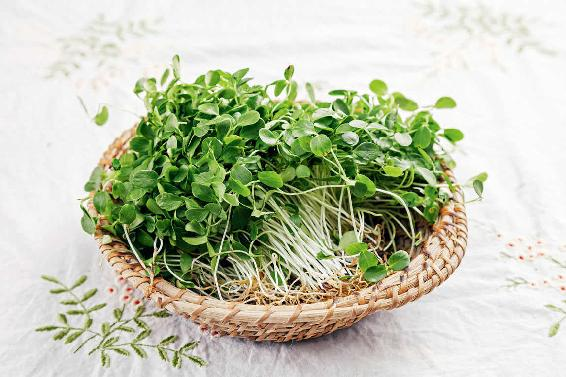
香椿，包括香椿芽、香椿叶、香椿根、香椿子，可以说都是好药。
每年春天，我们吃香椿芽的时间都非常短；过了这个季节，香椿芽长成了香椿叶，吃起来就不鲜嫩了；往后的时间，就慢慢无人问津了。
到了秋天，满树的香椿叶子就全都落了下来，一幅叶落归根的景象。
其实，每当看着满树的香椿叶，我都像是看见了一树的药!
1.香椿叶，有香椿芽大部分的营养和功效
香椿叶是一味非常好的药。它其实具有香椿芽大部分的营养和功效，也是可以补脾、通肾阳的。
香椿叶我们怎样用呢？不能把它当菜来吃了，但我们可以把它当茶泡着喝。
用香椿叶泡茶，除了具有前面讲过的香椿的所有功效外，它最突出的一点就是对糖尿病患者特别有好处。
如果您想一年四季都享受到香椿的好处，那就可以把香椿叶采下来留着，这样常年都可以喝到香椿茶。而且，在不同季节采下来的香椿叶，药效各有侧重。
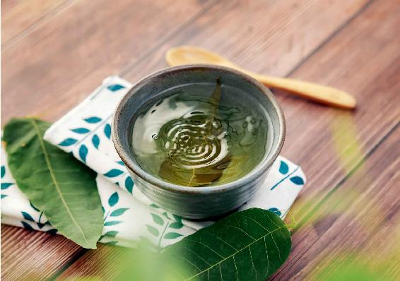
香椿叶茶
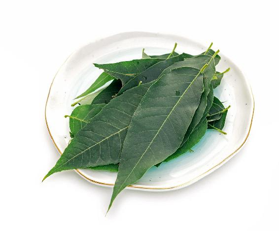
原料：新鲜的香椿叶。
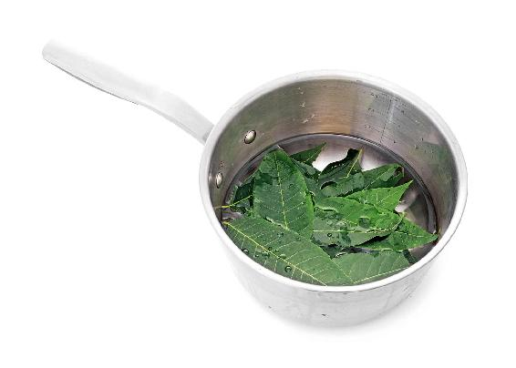
做法：
把新鲜的香椿叶洗干净，放入锅里，加冷水，煮开10分钟后关火。然后把煮好的水滤出来当茶喝就可以了。
2.喝香椿叶茶能消炎，预防肠道发生癌变
春夏季节采的香椿叶消炎的作用是最强的，肠胃不好的朋友，经常拉肚子的朋友，您不妨经常喝一点香椿叶茶，或者用香椿叶煮水喝。
反复患肠炎的朋友，可能肠道里有息肉、溃疡，如果反复恶性刺激，最终可能会导致肠道里面一些癌变的发生。为了预防肠道发生癌变，您不妨经常喝香椿叶煮的水或者是用香椿叶泡茶喝。用新鲜的香椿叶效果会更好。
3.我推荐糖尿病患者多喝香椿叶茶
我尤其推荐糖尿病患者一年四季多喝香椿叶茶，它对增强糖尿病患者的体质非常有好处，而且降血糖的作用也不错。
如果想要香椿叶的降血糖作用更好，我们可以采摘秋天的香椿叶。当然，糖尿病的调理是一个长期的过程，所以春、夏、秋三季您都可以采香椿叶来泡茶喝。特别是在秋天的时候，您可以多采一些。因为秋天的香椿叶所含的营养物质对于降血糖更有帮助。而且，秋天也非常适合大量地采叶。
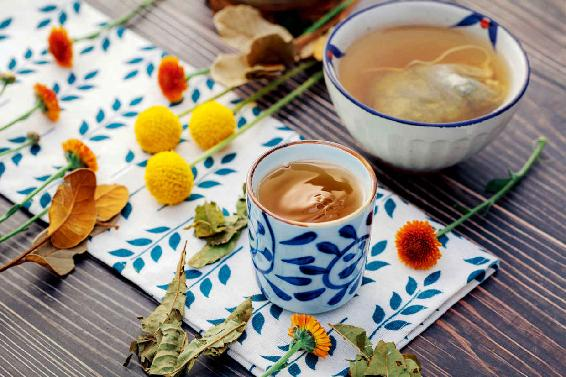
香椿叶的保存方法
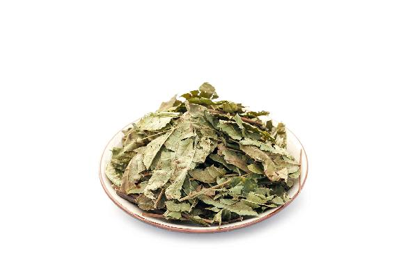
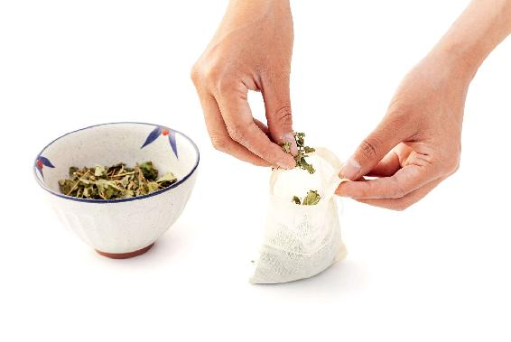
做法：
1. 把香椿叶采下来，然后晒干。
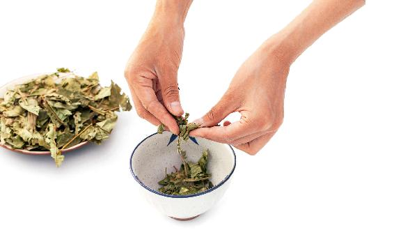
2.晒干之后，稍微把它搓碎保存。因为香椿叶都非常大，不是特别好保存，您稍微搓碎一些，比较方便分成小袋来装。
树木到了秋冬季节就会落叶，不管您采不采，它都会变成光秃秃的。您在落叶之前采摘香椿叶，不会伤到香椿树。每年秋天，我会把我家里两棵香椿树的叶子都收集起来，晒干，然后送给一些患有糖尿病的朋友。
我有时候会用一个更加方便的方法——用家里的小型中药粉碎机把香椿叶打成粉，然后装成一小袋一小袋的，送给患糖尿病的朋友。因为有些朋友工作非常忙，没时间泡茶喝，这个时候就可以直接服用打好的香椿叶粉，比如，吃饭的时候倒上一两勺，随意地吃下去。
但这种打粉的方法，我们要注意：食材一旦打成粉以后，它保存的时间就会大大缩短。
因此，您每次吃香椿叶粉，都要尽快把它吃完，不要一直保存。保存时间长了，它的药效就不够好了。
如果您有时间泡茶的话，最好不要把香椿叶打成粉，那怎么来用呢？
第一种方法：把香椿叶用水煮10分钟。
第二种方法：用开水冲泡。
这个茶是没有量的，每天您可以不用喝别的水了，就喝它。
一般来说可以早、中、晚喝三次以上，除了能辅助控制血糖外，它还可以预防糖尿病的并发症。对于一些患糖尿病时间比较久的人，是非常适合的。
有些朋友，由于患有糖尿病，长期吃降糖药，几年以后，发现药效越来越差，还出现了各种并发症，比如，全身酸痛、手脚发麻，以及血压变得不稳定。有这样一些体征的朋友，只要您用上面的方法坚持喝一两个月香椿叶茶，就会发现各种不适的感觉会得到缓解。有些坚持久的朋友会发现，吃药也不能控制的血糖有所改善了。
前面，我讲了香椿的很多好处，但有些朋友还是很纠结，因为香椿好处虽然多，但它毕竟是个发物，容易使人复发旧病，所以有的朋友不敢吃香椿。
其实，所有天然生长的东西，都是阴阳具足的，都是自带解药的。香椿，也不例外。
1.香椿芽、香椿叶祛寒湿；香椿根袪湿热
香椿叶、香椿芽都是发物，那它的解药在哪呢？在它的根儿上。
从香椿根上剥下来的皮，叫作根皮。这是一味中药，药名为椿白皮。
香椿的叶子是温性的，可以祛寒湿；而根皮正好相反，它是凉性的，可以祛湿热。它俩正好互为解药。
香椿芽可以通肾阳，有疏通的作用；而香椿的根皮是收的，有收涩的作用。香椿的根皮对一些有慢性出血（如经常牙龈出血）、慢性腹泻（如肠道湿热导致的腹泻，而且一两个月都不好）的人，很有效果。
肠道炎症分为寒湿和湿热两种。如果是寒湿导致的腹泻，您就用香椿叶煮水喝；如果是湿热导致的腹泻，您就用香椿的根皮煮水来喝。
湿热和寒湿怎么分辨呢？闻排泄物的气味。如果排泄物的气味非常酸、腐臭，而且颜色发黄，那就是湿热。如果排泄物的气味没有那么浓重，而且颜色发青，那就是寒湿。您可以根据不同的情况，来选择香椿不同的部位，泡茶饮用。
椿白皮对皮肤病有很好的调理作用。它专门调理一些吃了发物而发作的皮肤病，对皮肤上的癣、疥疮，也有调理作用。
如果吃了香椿芽以后，觉得皮肤有急性过敏反应，那您就可以用椿白皮煮水来解决。
椿白皮可以在中药店买到，因为它是一味药材。
那它怎么使用呢？
第一，可以用椿白皮熬水来喝。
第二，把熬水剩下来的椿白皮渣再煮一道水，用来洗澡。这对于调理皮肤的过敏症状，特别是在春天发作的桃花癣很有效果。
2.香椿子，专门调理虚寒性咽炎的好药
香椿，除了根皮是一味好药外，它的子也是一味好药。
咽炎如果没有调理好，会逐步发展成慢性咽炎。慢性咽炎也是分寒热的，一种是虚寒型，另一种是虚火型。
患虚火型慢性咽炎的人，喉咙会又干又痛，有一种被火烧的感觉，而且口干舌燥，特别爱喝水。
虚火型的慢性咽炎，可以用繁缕来调理。繁缕是一种在春天大量生长的野草，也是一种野菜。如果您要用它来调理虚火型慢性咽炎，一定要用鲜品效果才会更好。
患虚寒型慢性咽炎的人，咽喉的疼痛感不太明显，没有火烧火燎的感觉，但会有干痒的感觉；不口干舌燥，但总感觉咽喉里有一口痰。虚寒型的慢性咽炎适合用香椿子来调理。
3.香椿子和香椿叶，都能补肾阳
其实，香椿子和香椿叶有一个共同的功效——补肾阳。
咽喉并不只归肺管，它跟肾也有关系。
咽喉处有一个肾经的起点。一些朋友患有慢性咽炎，治不好，反复发作，因为他们总是往呼吸道、肺上去下功夫，这样是治标不治本的。
中医调理慢性咽炎，一定是先把肾调好，这样才能调理好咽喉问题。
咽喉，是人体的要道!它跟肾经是相通的。香椿叶和香椿子都有调理肾的作用。特别是香椿子，它补肾的作用更强。所以，您不妨用香椿子泡茶喝，对于调理虚寒型的慢性咽炎，它的效果是很好的。
有一点始终让我感到很遗憾，就是这个方法我自己还没有亲身体验过。
通常来说，我分享的所有方子，我自己都会去尝试，体验它的口感、效果、吃下去后对人体的作用。包括一些有毒的中药，我都会尽量去体验，这样才可以说得清楚它的性状、效果、用法。唯独香椿子，我没有用过，因为我没有看到过香椿结的子。
家里的两棵香椿树，已经有十多年了，我非常希望它们结子，但它们从来也不结，这是很遗憾的事。
有读者给我留言说，他妈妈托他转告我，每年春天要留一部分香椿芽，不要采它，等到老的时候，它就会长子的。
可惜的是，我家这两棵香椿树，始终不结子。即便我每年春天留下一些香椿芽不采，它也不结子。
这位读者朋友说他家院子里的香椿经常结子，但他妈妈以前不知道香椿子能当药用，都扔了，很可惜。现在他的妈妈读了我的书，知道每年秋冬季的时候，要保留下一些香椿子了。
如果您看到这本书，知道怎样能够促使香椿结子的方法，希望您能够在我的微信公众号后台留言给我，我也分享给大家。
读者评论：喝了香椿水，我爸的脚竟然消肿了不少
樱紫菱：用香椿煮水给我爸喝了四天，他的脚竟然消肿了不少。
么么哒：自从我开始喝香椿茶，每天上大号都很顺畅，而且每天早晚两次，别提多舒服了。